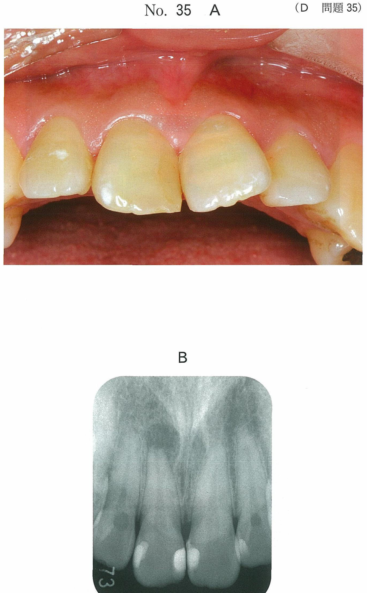

齲蝕象牙質の除去
齲蝕象牙質の層構造
齲蝕象牙質は細菌感染の有無と再石灰化能により2層に分けられる。
| 層 | 別名 | 細菌 | 再石灰化 | 齲蝕検知液 |
|---|---|---|---|---|
| 感染層（外層） | 齲蝕象牙質第一層 | あり | 不能 | 濃染 |
| 無菌層（内層） | 齲蝕象牙質第二層 | なし | 可能 | 淡染 |
除去の原則
- 感染層（外層）：除去する（再石灰化不能）
- 無菌層（内層）：保存する（再石灰化可能）
感染象牙質の識別方法
1. 硬さ
- 感染象牙質は軟らかい
- 触診や形成時の手指の感覚による
- 客観性・再現性がない
- 急性齲蝕と慢性齲蝕では大きく異なる
2. 着色
- 急性齲蝕：淡黄色〜褐色、着色の程度が少ない
- 慢性齲蝕：着色の前縁まで削除してもよい
- 着色だけでは識別困難
3. 齲蝕検知液
感染層（外層）と無菌層（内層）を染め分けることができる。
| 種類 | 溶媒 | 除去基準 |
|---|---|---|
| 1%アシッドレッド プロピレングリコール液 |
プロピレングリコール （組織透過性あり） |
濃いピンクは保存 淡染部まで削除しない |
| 1%アシッドレッド ポリプロピレングリコール液 |
ポリプロピレングリコール （組織透過性抑制） |
不染状態まで除去 |
齲蝕検知液の使用法
- ① 唾液などの除去
- ② 滴下
- ③ 10秒間静置
- ④ 水洗
- ⑤ 乾燥
- ⑥ 判別
※濃染の場合は①〜⑥を繰り返す
除去に使用する器具
回転切削器具
- スチールラウンドバー：感染歯質の除去
- スプーンエキスカベーター：手用器具、軟化象牙質の除去
化学-機械的齲蝕除去
- 薬液により齲蝕象牙質を軟化し、手用切削器具で除去
- 次亜塩素酸ナトリウムと3種アミノ酸の混合物
- 音、振動、発熱がなく、疼痛が少ない
術中の患者の痛み
- 通常、齲蝕象牙質外層に痛覚はない
- 齲蝕象牙質内層は、透明象牙質の形成によって細管が封鎖され、刺激の伝達が遮断されている
- 修復（第三）象牙質の形成がみられる
過去問で確認
103D45
20歳の女性。上顎左側第一小臼歯の一過性の冷水痛を主訴として来院した。コンポジットレジン修復を行うこととした。初診時の口腔内写真（別冊No.44A）、齲蝕検知液で染色し、水洗した後の写真（別冊No.44B）及び写真Bの濃染部の歯質を除去中の写真（別冊No.44C）を別に示す。 次に行うのはどれか。1つ選べ。

a 接着操作を行う。
b ベベルを付与する。
c 再び齲蝕検知液で染色する。
d 水酸化カルシウム剤を貼付する。
e ラウンドバーでさらに除去する。
b ベベルを付与する。
c 再び齲蝕検知液で染色する。
d 水酸化カルシウム剤を貼付する。
e ラウンドバーでさらに除去する。
正解：c
【解説】齲蝕検知液で濃染部を除去した後は、再び齲蝕検知液で染色して残存する感染象牙質の有無を確認する。濃染部がなくなるまで「染色→除去」を繰り返すのが正しい手順。いきなり接着操作やベベル付与に進んではいけない。
107B4
43歳の女性。下顎左側第一大臼歯の歯質の破折を主訴として来院した。自発痛はなく、歯髄電気診に反応を示す。コンポジットレジン修復を行うこととした。修復操作中の口腔内写真（別冊No.4）を別に示す。 次に行う操作はどれか。2つ選べ。

a 隔壁の設置
b 修復物の除去
c 齲蝕病巣の除去
d ウェッジの除去
e ボンディング材の塗布
b 修復物の除去
c 齲蝕病巣の除去
d ウェッジの除去
e ボンディング材の塗布
正解：b, c
【解説】写真では既存の修復物（アマルガムまたはCR）の下に齲蝕が認められる。まず不適合な修復物を除去し、齲蝕病巣を除去する必要がある。隔壁の設置やボンディング材塗布は齲蝕除去後に行う。
まとめ
齲蝕象牙質除去のポイント
- 感染層（濃染）：除去（再石灰化不能）
- 無菌層（淡染）：保存（再石灰化可能）
- 齲蝕検知液で染色 → 除去 → 再染色を繰り返す
- ポリプロピレングリコール液は不染状態まで除去